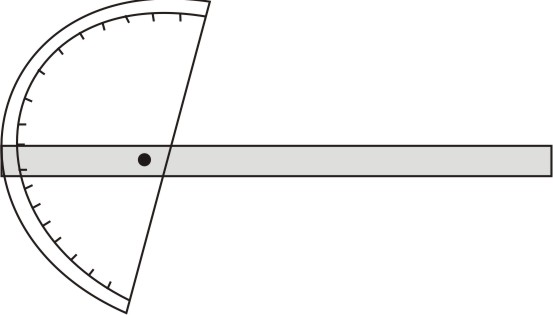
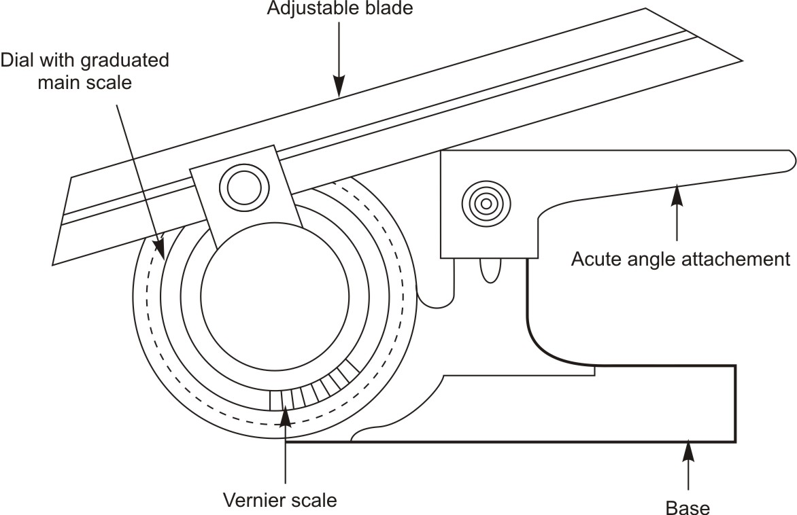
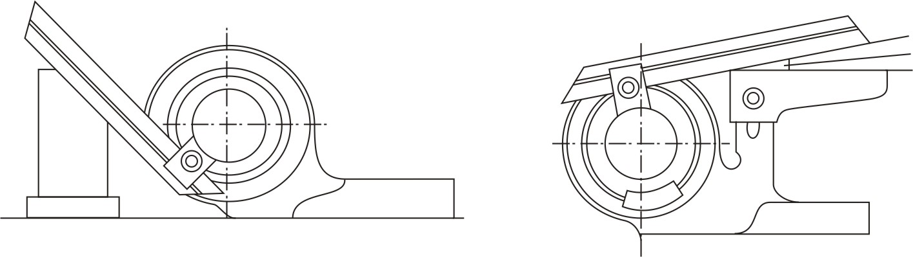
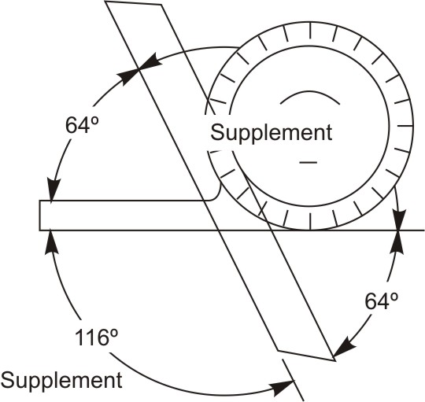
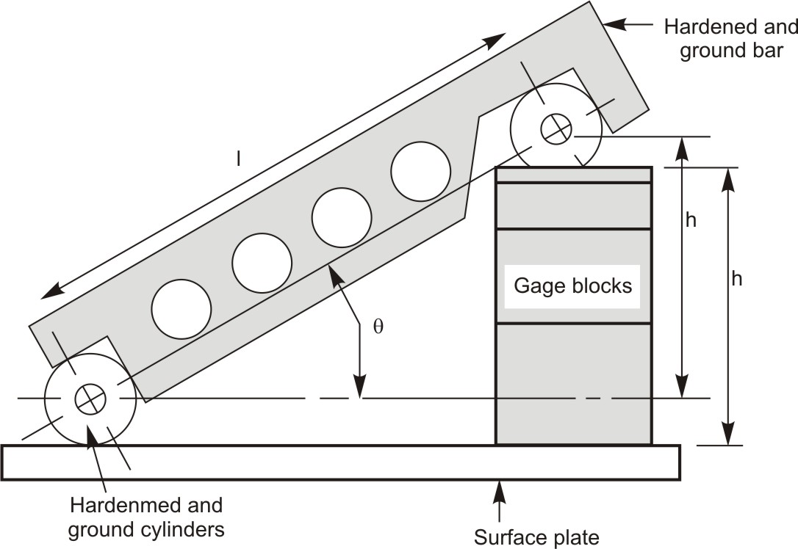

An angle can be an expression of a rotation. Every angle can be expressed in either a clockwise or a counter-clockwise rotation. The checking of angle can be done with various tools as per the requirement. Generally Plate Protractor, Bevel protractor, V-Block and sine bar are used.
The simplest angle-measuring device used in the machining industry is the plate protractor. The plate protractor is capable of measuring to within 1-degree. The flat back of the plate protractor makes it especially useful for layout work.

Figure 1: Bevel protractorThe bevel protractor picks up where the blade protractor leaves off. The bevel protractor is designed for precision measuring and layout of precision angles.
The bevel protractor consists of an adjustable blade with a graduated dial (main scale). The blade is usually 12 inches long. The main component of the bevel protractor is the (dial) main scale. The dial is graduated in degrees through a complete circle of 360o. The dial (main scale) is graduated into four 90-degree components i.e. the main scale is numbered to read from 0 to 90 degrees and then back from 90 degrees to 0.
As with other vernier measuring tools, the vernier scale of the bevel protractor allows the tool to divide each degree into smaller increments. The vernier scale is used for accurate angle adjustments and is accurate to 5 minutes or 1/12o. The vernier scale is divided into 24 equal graduations, 12 graduations on either side of the zero. Each graduation on the vernier scale is, therefore, one-twelfth of a degree.

Figure 2: Measuring an angle with bevel protractorThe universal bevel protractor is capable of measuring obtuse angles as well as acute angles when accompanied with the correct attachments. Look at figure below to give you an idea as to the uses of the universal bevel protractor.
[Image of universal bevel protractor]
Figure 3: When reading from 90 degrees, make sure to note the positions where the angle and the supplement are formedAny angle can be measured with the vernier bevel protractor, but you have to be careful to note which part of a full circle are you measuring. For every position of the bevel protractor, four angles are formed. Two of the angles can be read directly on the main scale and the vernier scale while the other two are supplemental angles. Keep track of the obtuse and acute angles and try to read from zero whenever possible. There is no general rule for use, just keep in mind what you are adding to 90 degrees to make up the angle being measured.
The sine bar is used for accurately setting up work for machining or for inspection. Basically a sine bar is a bar of known length. When gauge blocks are placed under one end, the sine bar will tilt to a specific angle. Gage blocks are usually used for establishing the height. Rule for determining the height of the sine bar setting for a given angle: multiply the sine of the angle by the length of the sine bar. The sine of the angle is taken from the tables of trigonometric functions.
Limitation of the Sine bar is, when using a sine bar, the height setting is limited by the gauge block divisions available.

Figure 4: Set up of Sine bar
Figure 5: Set up of Sine bar| Measuring tool | Degree of accuracy | |
|---|---|---|
| Metric | English | |
| Steel Rule | 0.5 mm | 1/64 inch |
| Vernier caliper | 0.5 mm with main scale and 0.02 mm with vernier scale | 0.01 inch with main scale and 0.001 inch with vernier scale |
| Micrometer | 0.02 mm | 0.001 inch |
| Dial Indicator | 0.002 mm | 0.0001 inch |
| ← Tutorial 9 | Tutorial 11 → |